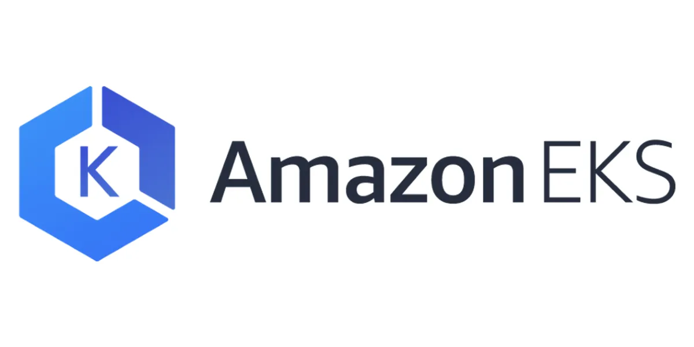

EKS Agora Permite a Modificação De Sub Redes E Grupos De Segurança
EKS agora permite a modificação de sub-redes e grupos de segurança
finalmente!

Fala gente! Para quem trabalha no mundo do EKS, tem novidades. A partir de agora, é possível atualizar as sub-redes e os grupos de segurança associados aos seus clusters EKS existentes. Isso mesmo! FINALMENTE! Se antes você tinha que ficar preso às configurações iniciais ou criar um novo cluster quando algo mudava, agora a vida ficou mais fácil.
A razão por trás dessa mudança? Os clusters EKS operam em VPC, garantindo um ambiente seguro e eficiente para rodar aplicações Kubernetes. No modelo anterior, as subnets e SG eram definidos na criação do cluster. Mas sabemos que, às vezes, há mudanças nas VPCs, como a adição de novas subnets. Agora, em vez de criar um cluster do zero, você pode simplesmente atualizar o existente e mantê-lo sincronizado. Legal, né? mas ainda não é possivel trocar de VPC, aí já é querer muito hahahaha.
A melhor parte é que essa atualização já está disponível para todos os clusters EKS existentes e em todas as regiões AWS que suportam o EKS. Então, se você estava esperando um momento para ajustar seu cluster, a hora é agora!
Quer saber mais detalhes técnicos e como começar? Dá uma passada na documentação do EKS. E fiquem ligados, porque sempre trazemos as novidades mais fresquinhas do mundo DevOps pra vocês! Abraço!